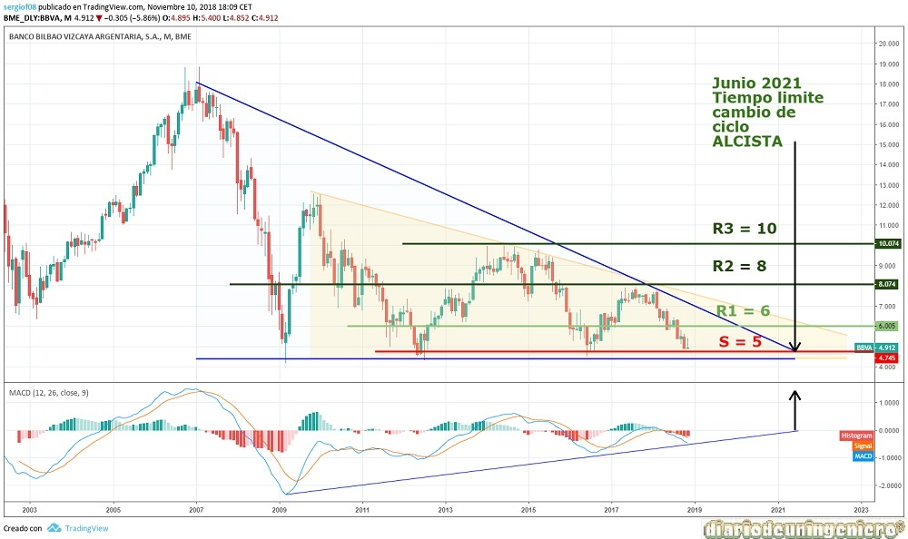
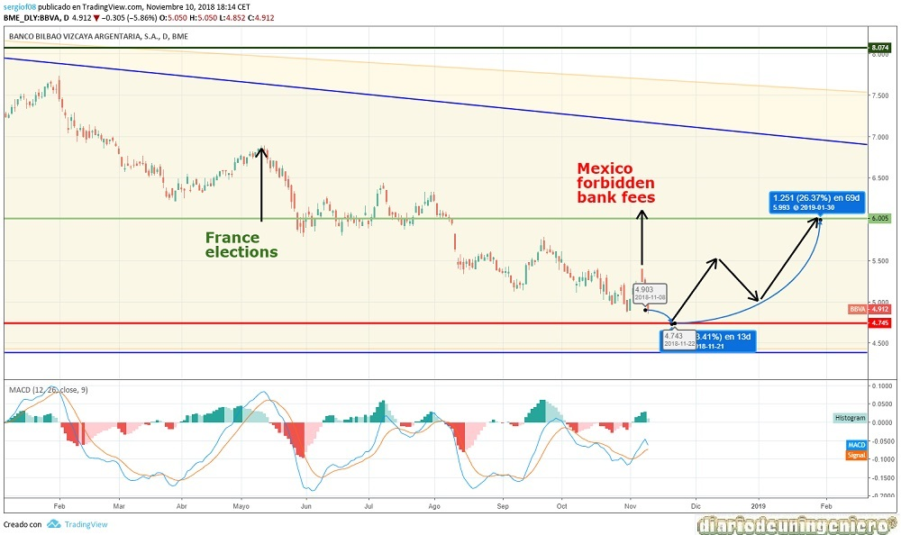

BBVA is the second largest bank in Spain, for years it was the same size or more than Santander bank. Between this bank, Santander and Caixabank control more than 60% of the branches and clients of the country.
The BBVA has a very big problem and is that the majority of its income comes from abroad, being Spain a country that has to cover but where it hardly receives benefits, partly due to its duties with the tax agency and its sponsorship events, and In Spain, most of the capital earned is used to deduct taxes from other activities.
This strategy of diversification by country carries a risk and is that if the countries where is found have financial problems hit the entity in the form of losses, either by the devaluation of the currency or because people have worse conditions as it decreases the consumption of customers and the balance it handles.
BBVA has a lot of business activity in countries like Turkey , which 2 years ago had an episode of instability with the coup d'etat to Erdogan that caused moments of panic among its shareholders, although the hit little hard and stability returned to the country.
Where you have more activity from all countries is Mexico , where you get more than 25% of the group's income. And this is where he has really had problems and continues to have them, as an example the devaluation of the Mexican peso and the problems with the border with Trump has made a dent in its benefits, diminishing them in a considerable way. It is noteworthy that when Trump launched its threats of tariffs on Mexico the BBVA lost almost 10% in 3 days.
In South America, the exhibition is quite well distributed by countries, although there is not a country that affects too much, as in the case of the Santander bank with Brazil or Chile.
Another country where it is quite arragged is in United States with 10% of its weight but due to the strength of the American economy it is really where it is not having problems.
The differences between the two banks can be seen in the following link .
That said BBVA has been twisted and quite the expectations in their future years and is that the party that currently governs Mexico led by Lopez Obrador has had the brilliant idea of banning bank fees and that's where they make their August and where they get special benefit from customers .
In Spain, unlike other countries, the most powerful companies that make the most money are the banks and therefore have a lot of decision-making power in many government measures, since they lend the money to the companies that operate in the country. country. This is why the governments that have been appearing always go hand in hand and have good relations .
This is quite sad and does not say anything good about the country where we live where due to our optimal geographical and climatological conditions and the high human quality that our population has, we should be one of the leading countries in the world. Our country is surrounded by the sea, having contact with the ocean, and being close to the great powers for foreign trade such as the United States and the most powerful European countries. But nevertheless all these advantages are only used by a few in their favor and when this happens the progress of the country in general goes down.
Being a bank, the debt and all the securities that it carries are not relevant, since the bank is the one that loans and its debt is usually referenced to other banks or entities, as they are the creditors of many companies and individuals.
These data are usually internal to the bank and can not be presented as they are constantly changing.
Here I present the data of fundamentals that I think are most important:
| ### | 2014 | 2015 | 2016 | 2017 | 2018 |
|---|---|---|---|---|---|
| Beneficio/valor acción | |||||
| Capitalization (M) | 48.469 | 42.905 | 42.118 | 47.422 | 32.749 |
| PER | - | 8,77 | 9,82 | 7,06 | 6,88 |
| Net Benefit(M) | - | 2.642 | 3.475 | 3.519 | 4.800/td> |
| Dividend | 0,29 | 0,33 | 0,37 | 0,24 | 0,27 |
| Profitability per share | - | 6,72% | 7,53% | 4,89% | 5,50% |
Considering the fundamental analysis we observed a much more marked increase in profit in the last three years, having almost doubled the benefit compared to 2014.
Although the prospects are not good due to the last measure in Mexico that could greatly weigh your total benefit. But unlike Santander bank where the Brexit is not yet closed and in which the change in financial transactions could affect the entity very negatively, where it has almost 33% presence.
That is why in my view the future of this entity with respect to Santander is more alagüeño.
If we look only at the technical space we can see how Santander has a bearish policy since the real estate crisis and the international crisis of 2008. The real difference is that the BBVA minimums are not decreasing and have managed to respect the hard support he has at 5 euros.
BBVA has always watched over the shareholder and in cases of weakness has bought treasury stock to protect the value, this says a lot of some and other leaders.
You are now at an optimal time to make a purchase although there will be more opportunities . By triangulation, the countdown marks us for 2021, where before that date should break the bearish guideline and take off as never before.
This account is also in line with the change in economic and banking policy of the ECB, which expects to raise interest rates by the end of 2019 or by the beginning of 2020 . Before that date should be noted a strong rise or a small attempt to break the resistance that right now is very close to 7 euros .
If we look at the MACD indicator we see how the indicator of accumulation is positive from the famous drop slowly approaching 0. This is a very positive indicator that is marking the way.

If we go to the short-term chart we see that the margin of fall is very slight being less than 5%. However, the possible first raise with a target of 6 euros would have a capital gain of 26%, where it would be a flag to start distributing. Needless to say if it manages to exceed the resistance of 8 euros in the future in five years, where we could double our capital easily. And it is that Santander now doubles the BBVA in capitalization but not in revenue, so the stock valuation in favor of Santander is somewhat unbalanced.

© 2016 - All Rights Reserved - Diseñada por Sergio López Martínez
![[Valid RSS]](https://www.feedvalidator.org/images/valid-rss-rogers.png "Validate my RSS feed")